Етап 0 · Дослідження · зібрано 2026-11-11, доповнено 2026-11-12
Ресерч Шухляди
Підсумок кроків 03–07: хто вже розв'язує задачу «зберегти посилання й знайти потім», що кажуть користувачі, як у найкращих продуктах завершується збереження й пошук, який патерн ляже на наш контекст і що з цього перевіряти на прототипі. Джерело тексту — research.md, бриф — CLAUDE.md.
TL;DR
Читається за хвилину. Подробиці й джерела — у розділах нижче.
3 головні інсайти
- Після збереження ринок мовчить. Повного ланцюжка «видно → де лежить → змінити → скасувати» немає ні в кого, навіть в еталонах. Бенчмарк
- Ринок зберігає поза вебом — розширення, «Поділитися» на телефоні. У нас лише вебзастосунок, і це головний ризик. Ризик
- Впорядковувати вручну не хочуть («tedious… too much work»). Автокатегорію цінують, коли вона влучає. А шукати серед свого незручно, і порожній пошук — глухий кут. Конкуренти
1 ключове рішення
Патерн «захоплення з автосортуванням»: Ctrl+V, і все. Категорію вгадує система, підтвердження показує назву й категорію та дає «Змінити» і «Скасувати». Патерни
Звідки дані
| Позначка | Джерело | Що з нього взято |
|---|---|---|
| 👤 власний акаунт | Скріни з акаунтів PM: research/screens/own/ і частина в telegram/, notion/, raindrop/, mymind/. Особисте замазано й перевірено на збільшених фрагментах | Як зсередини працюють збереження, підтвердження й пошук: Telegram, Notion Web Clipper, mymind, Raindrop, LinkLy і чотири еталони (Maps, YouTube, Slack, Linear) |
| 🌐 публічне | Сайти, довідки, changelog, App Store, Google Play, Chrome Web Store, відгуки в магазинах, Trustpilot, Reddit, новини | Обіцянки, кроки з довідок, рейтинги, ціни, оцінки Gmail, цитати користувачів |
| 🎬 трейлер | Офіційне відео mymind «intro & walkthrough» (≈3 роки), розібране покадрово | Підтвердження і пошук mymind |
| 📰 сторонній | Zapier про Slack Later | Лише колишні статуси й нагадування Slack |
| 📘 бриф | CLAUDE.md | Цілі, аудиторія, рішення, планки «до 5 с / до 10 с». Основа оцінок і висновків, а не факт про ринок |
| ⚠️ не підтверджено | — | Твердження без джерела: припущення або висновок |
Код на кшталт 04·R1 веде до таблиці Джерела; число — нотатка, з якої взято джерело (research/notes/), а res·W1 — джерело, додане прямо в підсумок. Перелік усіх скрінів — screens/README.md. Клік по скріну відкриває оригінал.
1Конкуренти
П'ять продуктів: два прямі аналоги (хард), два, якими аудиторія користується замість архіву (софт), і один еталон швидкого пошуку (аспіраційний). Повна версія — 04-matrix.
Матриця
| Вісь | Raindrop.io · хард | mymind · хард | Telegram «Збережене» · софт | Notion Web Clipper · софт | Raycast · аспіраційний |
|---|---|---|---|---|---|
| Обіцянка на першому екрані | «All-in-one bookmark manager», «Runs everywhere»; насичений інтерфейс 04·R1 🌐 | «Remember everything. Organize nothing.» 04·M1 🌐 | сайт про месенджер, про «Збережене» нічого 04·T1 🌐 | команди й ШІ-агенти, про посилання нічого 04·N1 🌐 | «Your shortcut to everything», «Fast» 04·Y1 🌐 |
| Як зберегти | веб: «+ Add» → поле URL → «Submit», падає в поточну колекцію 04·R9 👤 | розширення: 1 клік або Cmd+Shift+S 04·M2 🌐; у вебі поля для посилання немає 04·M7 👤 |
вставити в чат → прев'ю ще до відправки → Enter, 3 дії 04·T5 👤 |
іконка → назва з хвостом сайту → «Save page»; 2 дії, якщо база вже обрана 04·N10 👤 | «Create Quicklink» → посилання → назва → Ctrl+Enter, лише з комп'ютера 04·Y2 🌐 |
| Як знайти | назва, опис, теги, нотатки; текст сторінки й ШІ — лише Pro 04·R4 04·R11 🌐 | «Folders are dead»; слова запиту стають пігулками-фільтрами 04·M10 🎬 | лупа і прокрутка; теги лише Premium 04·T2 🌐 04·T5 👤 | Ctrl+K, фільтри за датою й місцем 04·N4 🌐 |
нечіткий збіг, ранжування за частотою й давністю 04·Y3 🌐 |
| Що після збереження | у довідці не описано 04·R3 🌐 | «Saved to your mind» + «Add tags» 04·M10 🎬; «Скасувати» немає own/mymind 👤 | лише ✓✓; обгортка LinkedIn дає «You're leaving LinkedIn» 04·T5 👤 | лише «Open in Notion», ні «збережено», ні назви бази 04·N8 👤 | у документації не описано 04·Y2 🌐 |
| Українська | немає, є російська 04·R6 🌐 | лише англійська 04·M4 🌐 | є 04·T1 🌐 | немає 04·N6 🌐 | не знайдено 04·Y1 🌐 |
| Google Play | 4,3 (5,07 тис.) 04·R10 | 3,5 (1,13 тис.) 04·M9 | 3,7 (17,4 млн) 04·T6 | 4,6 — весь Notion; Clipper у Chrome 2,9 04·N9 04·N5 | — |
| Ціна | безкоштовно, Pro ≈ $3/міс 04·R8 | 100 карток безкоштовно; від $4,99/міс 04·M6 04·M8 | безкоштовно, теги — Premium 04·T2 | безкоштовний план 04·N1 | безкоштовно для особистого 04·Y4 |
Поза п'ятіркою: LinkLy — єдиний знайдений український менеджер посилань, на «ви», без автоназви, пошуку й категорій own/linkly 👤. Pocket закрито 8.07.2025, дані тих, хто не встиг експортувати до 8.10.2025, видалено 03·A17 🌐.
Публічні сторінки 🌐 публічне

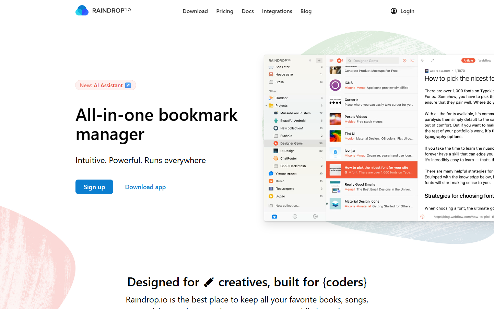

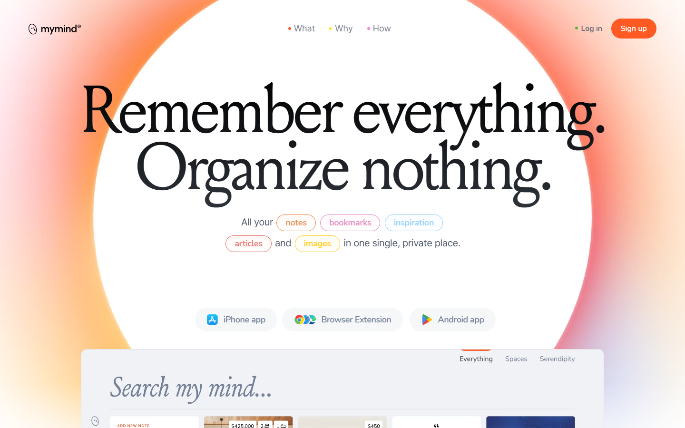

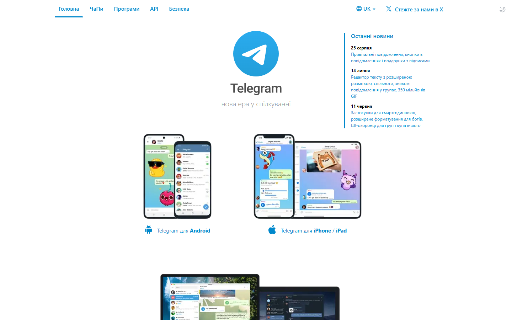

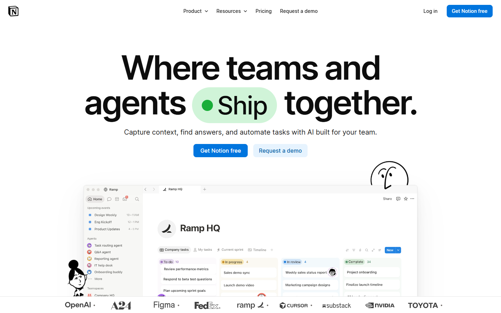

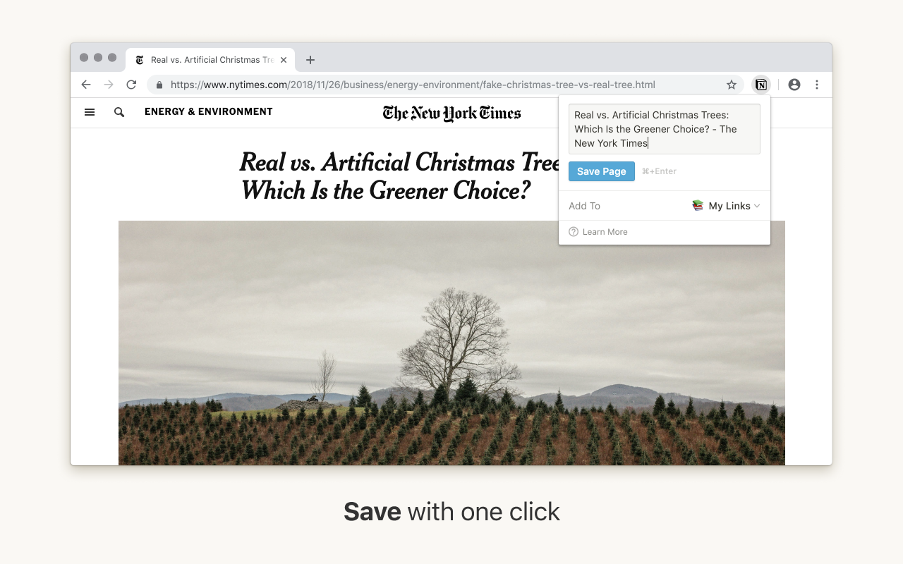

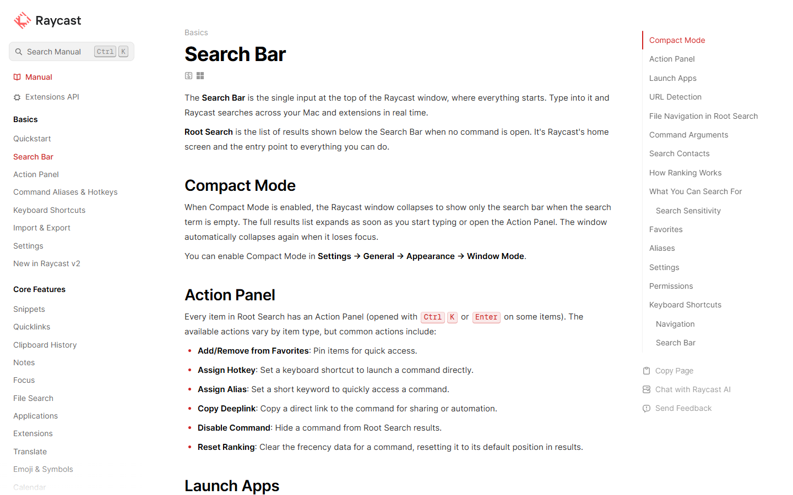
Власні акаунти 👤 власний акаунт

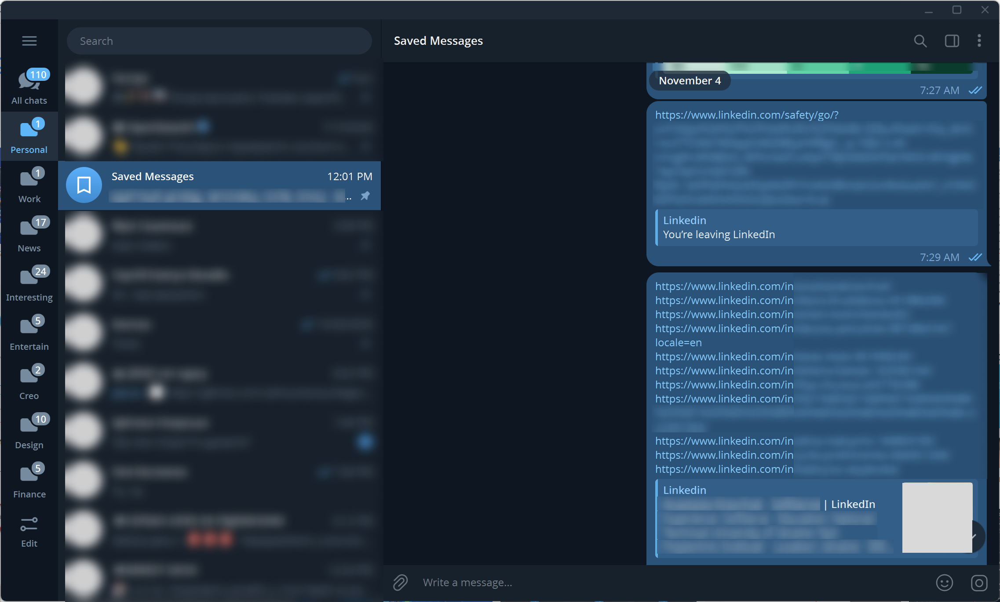

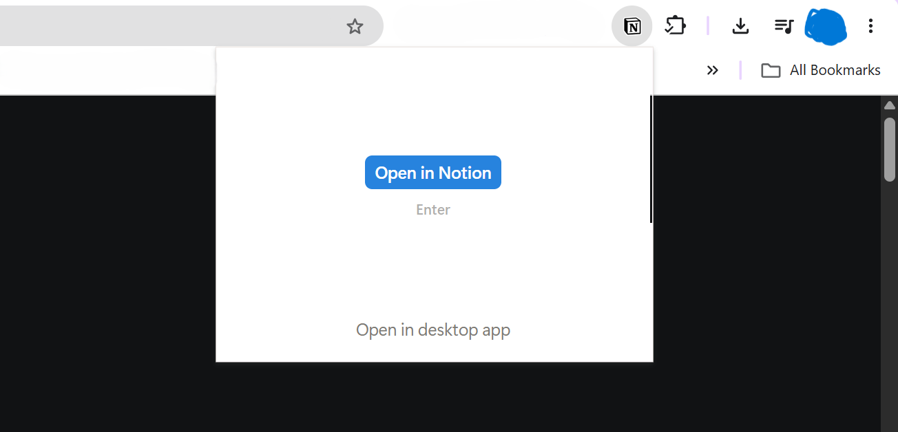

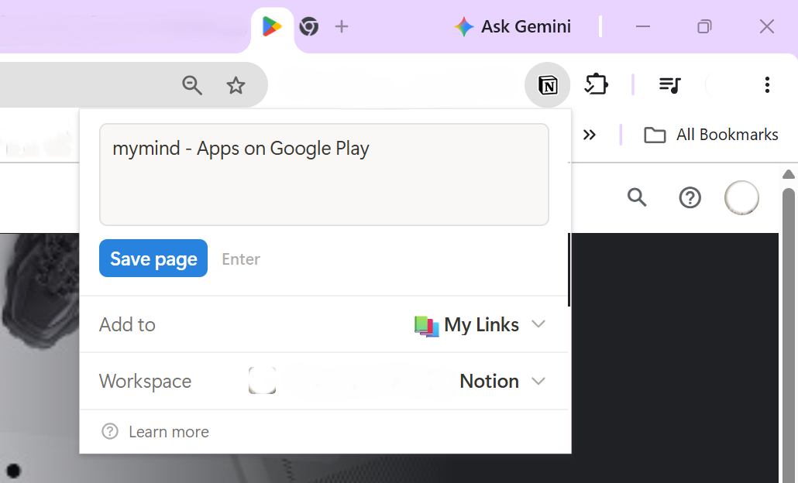

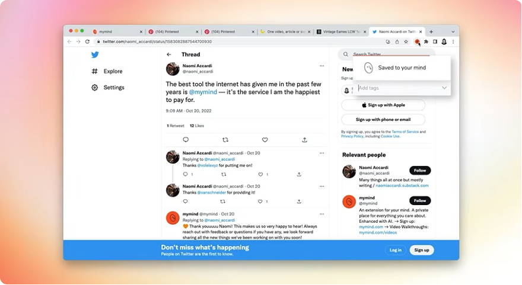

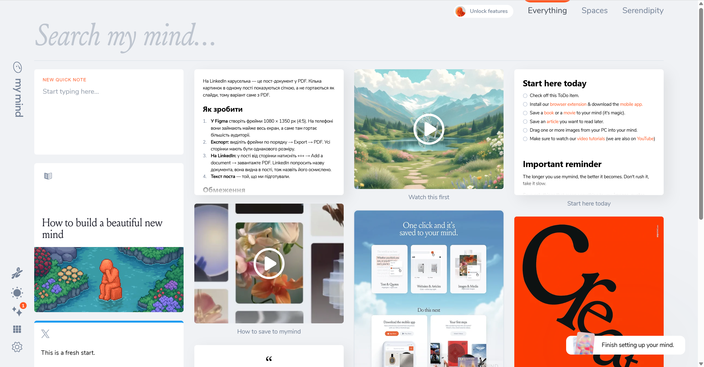

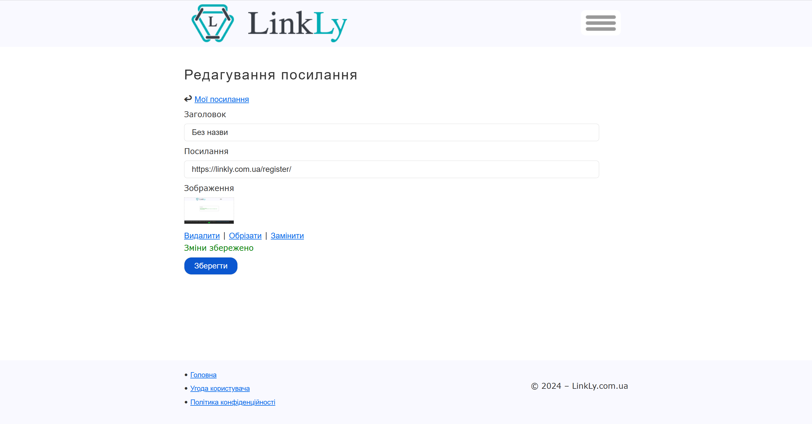
Що кажуть користувачі 🌐 публічне
Відгуки App Store і Chrome Web Store, відібрані за темами гіпотез. Імен авторів не наводимо; ID, дати й оцінки — у 07-reviews.
| Тема | Що чути | Джерело | Гіпотеза |
|---|---|---|---|
| Розкидано по місцях, потім не знайти | bookmarks feature in the web browsers on each was chaos; no longer have to worry about … remembering where you saved stuff; screenshot things I can never find again | 07·V1 07·V2 | 4 |
| Впорядковувати — забагато роботи | saving it to Notion but it felt tedious… too much work; I have to manually choose the same database every time I save | 07·V5 07·V4 | 9, 5 |
| Автокатегорію цінують, але вона має влучати | it used to learn and then auto populate [category]… doesn't happen anymore; suggestions aren't even close to what is sensical | 07·V1 07·V5 | 9, 1 |
| Чи збереглося? | sit their loading and saying retry; doesn't always save what I put in it; let the icon show whether the link is already saved | 07·V1 07·V2 07·V5 | 1, дублікати |
| Тертя при збереженні | search for the app, then open it, then click on the bar, then type… too lazy and omit | 07·V2 | 5 |
| Архів може зникнути | hundreds of links and now they were gone; all the pictures I collected disappeared; Pocket shutting down and need a replacement | 07·V1 07·V2 | 8 |
| Забувають, навіщо зберегли | tabs open to come back to — but can't remember why — 2 months later | 07·V2 | нотатка, бриф §3.3 |
Telegram — тиша: у 900 відгуках App Store за рік «Saved Messages» згадано один раз, і схвально («personal cloud») 07·V3. Біль із брифу це не спростовує й не підтверджує — ⚠️ не підтверджено. Межі: лише англомовні відгуки США й Великої Британії, відбір вручну, частота невідома; Google Play і Reddit не зібрано.
Три спільні патерни ринку
1. Збереження живе поза вебом
Основний шлях — розширення, «Поділитися» на телефоні або окремий застосунок. У вебі додавання другорядне або його немає. 04·R2 04·M2 04·N2 🌐 04·M7 👤
Три відмінності
Структура проти «нічого не впорядковуй»
Raindrop і Notion — колекції й бази, mymind — автотеги, Telegram — стрічка. Шухляда з 7 категоріями й пласкими тегами посередині. 04·R1 04·N2 04·M1 🌐
2Бенчмарк
Вимір: «Як задача завершується» — що людина бачить після збереження і після пошуку.
Обрали його, бо тут ринок найслабший (патерн 3), а саме тут вирішується «відчуття, що все під рукою» бриф §2. Повна версія з цитатою до кожної клітинки — 05-benchmark.
Еталони і контрольна точка: 8 критеріїв, шкала 1–5
Gmail, Linear, Slack, YouTube, Maps — еталони з інших ніш (довідки 🌐 і акаунти PM 👤; Gmail — лише довідки). mymind — контрольна точка ринку: конкурент з матриці з найкращим підтвердженням, оцінений за тими самими критеріями (трейлер 🎬 + акаунт PM 👤). «—» — критерій не стосується продукту, «н/д» — немає даних; у середнє не входять.
| Критерій | Gmail | Linear | Slack | YouTube | Maps | mymind (контроль) |
|---|---|---|---|---|---|---|
| К1 Видиме підтвердження | 5 | 5 | 5 | 5 | 5 | 5 |
| К2 «Де воно тепер» | 5 | 5 | 5 | 4 | 4 | 3 |
| К3 Виправити в один дотик | — | 3 | — | 5 лише Android | 2 | 4 лише теги |
| К4 Скасувати | 5 | 4 | 2 | 2 | 2 | 1 |
| К5 Слід у системі | 4 | 5 | 4 | 3 | 5 | 4 |
| К6 Старт пошуку не з нуля | 5 | 5 | 4 | 4 | 4 | 4 |
| К7 Без результатів — не глухий кут | 5 | 2 | 3 | 1 | 3 | н/д |
| К8 Не заважає потоку | 5 | 5 | 5 | 5 | 4 | 5 |
| Середнє | 4,9 | 4,3 | 4,0 | 3,6 | 3,6 | 3,7 |
| Джерела | 05·G1 05·G2 | 05·L2 own/linear | 05·S1 own/slack | 05·Y2 own/youtube | 05·P3 own/google-maps | 04·M10 own/mymind |
Повного ланцюжка «видно → де лежить → змінити → скасувати» немає ні в кого. Найближче — Gmail («Змінити» йому не потрібне) і mymind («Скасувати» немає). Решта конкурентів не дотягує й до К1: Telegram і Notion — по 2 бали 👤.
Що показали скріни

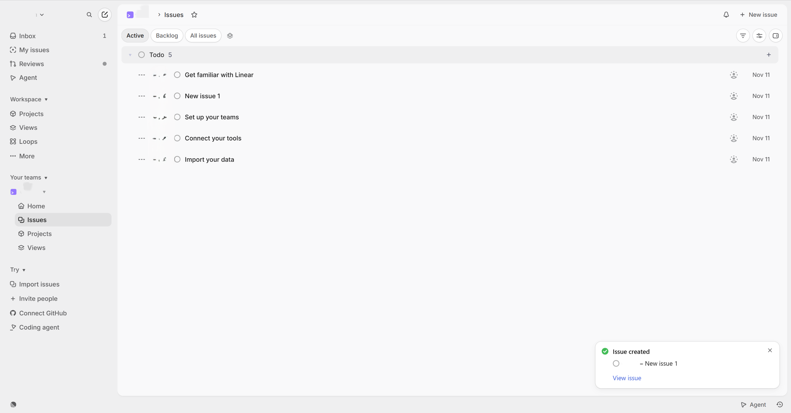

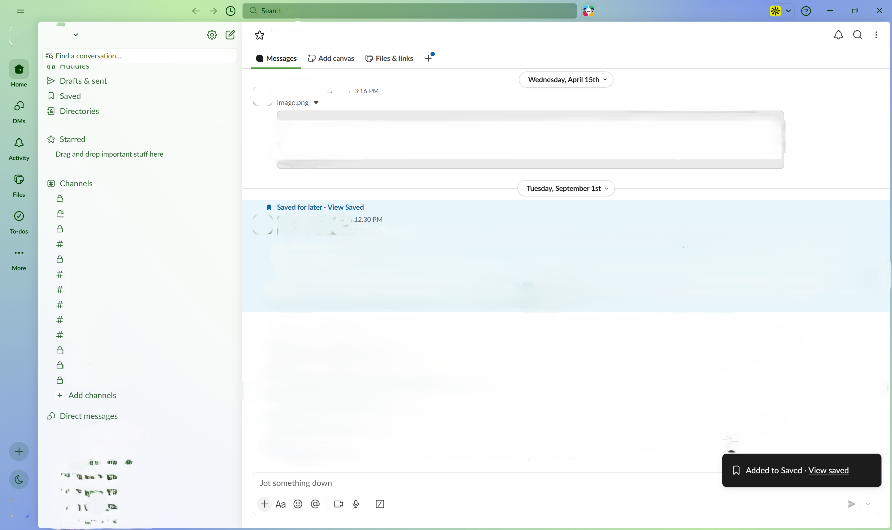

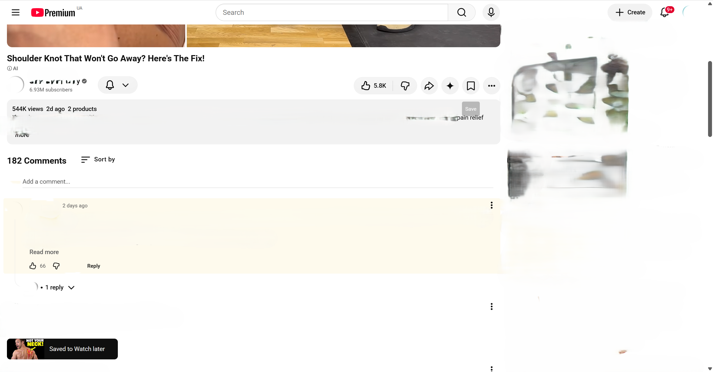

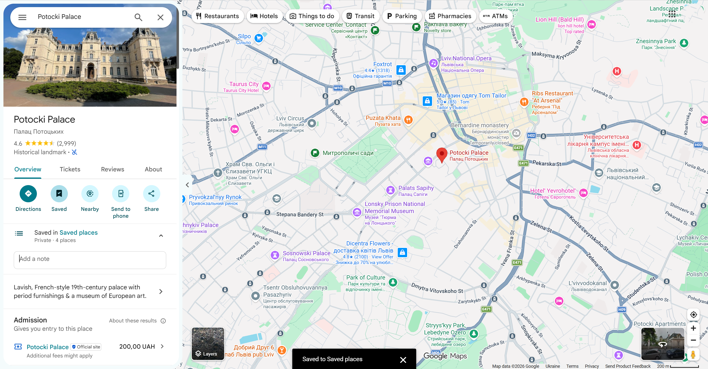

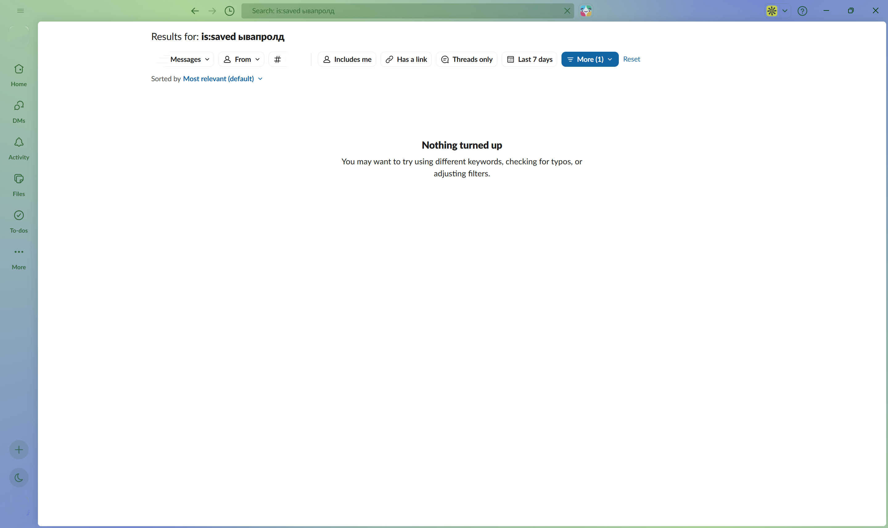

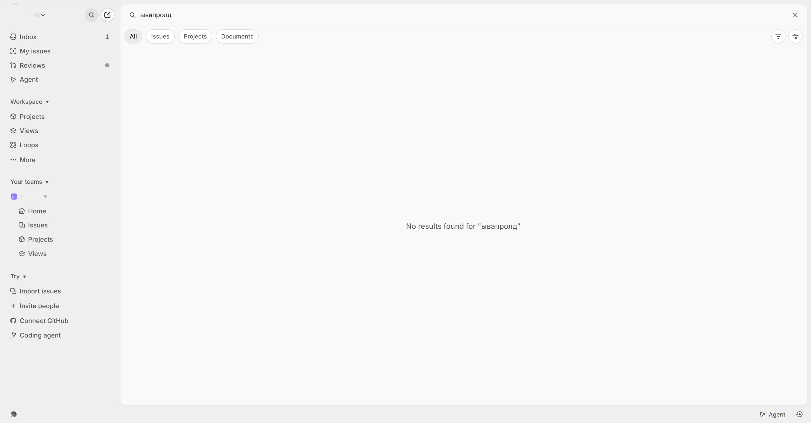
Топ-3 механізми для MVP
Механізм 1 · К1–К3
Підтвердження з назвою, категорією і «Змінити»
Після Ctrl+V: «Вкладаю в Шухляду…» → «Збережено в Шухляді · назва · категорія · Змінити · Скасувати».
Звідки
- двоступеневе підтвердження — mymind 04·M10 🎬;
- «Змінити» в повідомленні — YouTube на Android 05·Y2 🌐;
- перехід до збереженого — «View saved», «View issue» 👤;
- назва до збереження — Telegram, Notion; хвости сайтів відрізаємо 👤;
- необов'язкова нотатка — «Add a note» у Maps 👤.
Чому для нас
Категорію вгадуємо, змінюють її одним кліком бриф §3.2. Користувачі цінують автопам'ять категорії, але дратуються, коли підказки «не влучають» 07·V1 07·V5.
Механізм 2 · К4
«Скасувати» в тому самому повідомленні
Картка створюється одразу, «Скасувати» її видаляє.
Звідки
- серед еталонів — лише Gmail («Undo», 5–30 с) 05·G1 🌐;
- серед конкурентів — ніхто, і mymind теж own/mymind 👤.
Чому для нас
Знімає ризик «вставка будь-де одразу зберігає» бриф §3.1. Що випадкове збереження справді лякає — ⚠️ не підтверджено.
Механізм 3 · К5–К7
Пошук стартує з недавнього й не буває глухим кутом
До введення — «Нещодавно додане». Нічого не знайшлося — нечіткі збіги і «Шукали лише у „Фільмах“. Шукати всюди?».
Звідки
- недавнє на старті — Linear 05·L2; схожі результати — Gmail 05·G2 🌐;
- пігулки-фільтри — mymind 🎬; «Reset» — Slack 👤;
- цілі слова вище за нечіткі збіги — Raycast 2026 03·A10 🌐.
Чому для нас
«Знайти одним пошуком» — половина ключової задачі, планка до 10 с бриф §1, §9. У відгуках: «chaos», «can never find again» 07·V1 07·V2.
Що не спрацює
Не беремо
«Збережене» як черга справ зі статусами (Slack Later)
Звідки
Колишній Later мав статуси й нагадування 05·S3 📰. Тепер Slack сам розділив: «To-dos is for tasks, and Saved is for everything else» 👤.
Чому не нам
Шухляда — архів; нагадувань у MVP немає бриф §3.3, §3.6.
Контраргумент
Частина людей цінує саме «на потім»: Best save for later app… to save links for later reading
, including reminders
07·V1.
Рішення не змінюємо
Потребу «переглянути пізніше» закриває перемикач «Вже переглянуто» — без обов'язку «закрити» кожне збереження. Нагадування — кандидат після MVP, окремо від збереження.

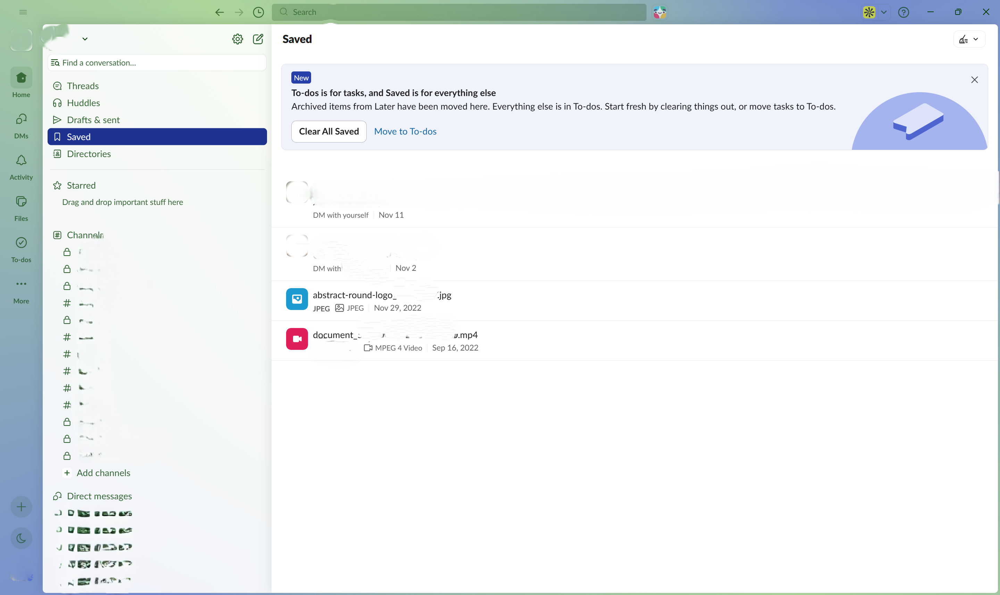
3Патерни
Ключова задача: людина за кілька секунд кладе посилання в одне місце і потім одним пошуком знаходить його, навіть не пам'ятаючи, де й коли зберегла.
| Патерн | Хто вирішує, куди лягає | Як знаходять | Приклад | Для нас |
|---|---|---|---|---|
| 1. Захоплення з автосортуванням | система, одразу | категорія або пошук | mymind, YouTube Android | обраний |
| 2. Розкладання при збереженні | людина, до збереження | відкрити папку | Maps, Raindrop, Pinterest | ні — з'їдає 5 секунд |
| 3. Спершу пошук | ніхто | лише пошук | Linear, Raycast | другий, за умови |
| 4. Хронологічна стрічка | ніхто | гортати | Telegram «Збережене» | ні — від неї тікають |
| 5. Черга зі статусами | людина, після | за статусом | Pocket, Slack Later | не підходить |
Як працює кожен патерн, коли підходить і коли ламається — 06-patterns. Приклади в таблиці — з матриці й бенчмарку вище.
Обраний патерн: захоплення з автосортуванням
Одна дія, щоб зберегти, і жодних питань. Система сама визначає категорію за доменом, а підтвердження показує, куди лягло, і дає змінити одним кліком.
| Чому саме він під наш контекст | На що спирається |
|---|---|
Лише він вкладається в 5 секунд: Ctrl+V з будь-якого екрана — одна дія без питань. Протилежне, вибір списку до збереження, видно в Maps і YouTube; скільки часу це забирає, не вимірювали | бриф §3.1, §9 👤 own/google-maps/02, own/youtube/01 · ⚠️ |
| Бриф уже описує саме його: 7 категорій, вгадуємо за доменом, змінюємо одним кліком; обгортки розгортаємо | бриф §3.1, §3.2 |
| Аудиторія тікає від протилежного: «Notion — занадто складно; закладки — звалище». Користувачі: «saving it to Notion… felt tedious», «no folders, no rules, no guilt» | бриф §2 07·V5 07·V2 |
| Найпростіша реалізація: без папок, вкладеності й екрана вибору місця | бриф §4 |
Умова
Без механізмів 1 і 2 з бенчмарку помилку вгадування не помітять.
Другий, за умови — спершу пошук
Якщо на тестах люди ігноруватимуть категорії, головним екраном стає пошук, а категорії — фільтрами. ⚠️ не підтверджено
Не підходить — черга зі статусами
Архів, а не список справ; нагадувань у MVP немає; Pocket закрили, Slack розділив «Saved» і «To-dos».

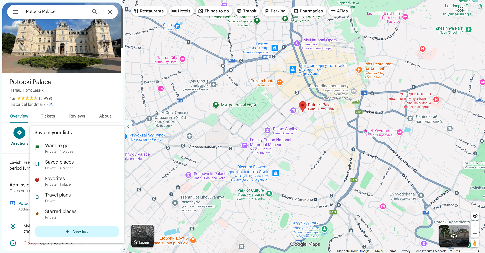
4Висновки: прогалини → гіпотези
Формат: Якщо ми зробимо X, то Y, бо Z. Перевіримо: … Кожна гіпотеза — припущення ⚠️; більшість перевіряємо на клікабельному прототипі, решту після нього — див. пріоритет. Планки бриф §9: додати до 5 с, знайти до 10 с.
| # | Прогалина | Гіпотеза | Звідки випливає |
|---|---|---|---|
| 1 | Ніхто з конкурентів не показує, куди лягло посилання, і не дає виправити 04·T5 04·N8 👤. Відгуки: «loading and saying retry», «doesn't always save» 07·V1 07·V2 | Якщо одразу після Ctrl+V показати «Збережено в Шухляді · назва · категорія · Змінити», то людина не піде перевіряти список і виправить хибну категорію з повідомлення, бо місце й дія — на тому самому екрані. Перевіримо: після збереження людина без підказки називає категорію; частка тих, хто відкриває список «перевірити», проти варіанта без повідомлення | Конкуренти · патерн 3, відгуки; Бенчмарк · механізм 1, контрольна точка |
| 2 | «Скасувати» в повідомленні — лише Gmail 05·G1; немає ні в еталонах, ні в mymind 👤 | Якщо дати «Скасувати» на кілька секунд у тому самому повідомленні, то людина вставлятиме сміливіше й не прибиратиме випадкові картки вручну, бо помилка виправляється одним кліком там, де сталася. Перевіримо: сценарій з випадковою вставкою — чи знайшли «Скасувати» без підказки і за скільки секунд. ⚠️ | Бенчмарк · механізм 2, контрольна точка (К4) |
| 3 | Порожній пошук — глухий кут у Linear, Slack, Maps; схожі результати лише в Gmail 05·G2 👤 | Якщо замість «нічого не знайдено» показати нечіткі збіги і «Шукати всюди?», то людина знайде посилання до 10 с навіть з одруківкою чи ввімкненим фільтром, бо порожній екран перестає бути кінцем. Перевіримо: завдання з одруківкою і фільтром — медіана часу ≤ 10 с | Бенчмарк · механізм 3 (К7); Конкуренти · відмінність 2 |
| 4 | У вебі Maps і YouTube не шукають серед свого; у Telegram лише текст і прокрутка 👤 04·T2. Відгуки: «chaos», «can never find again» 07·V1 07·V2 | Якщо пошук по своєму доступний з будь-якого місця (Ctrl+K / /) і стартує з «Нещодавно доданого», то людина знайде посилання, не пам'ятаючи, де й коли зберегла, бо все лежить в одному місці, а пошук починається з недавнього. Перевіримо: «знайди те, що зберегли минулого тижня» без назви — час ≤ 10 с і кількість дій | Конкуренти · патерн 2, відгуки; Бенчмарк · К6–К7; Патерни · другий |
| 5 | Ринок зберігає з розширення й телефона, у нас лише веб 04·R2 04·M2. Відгуки: зайвий крок — «too lazy and omit» 07·V2, «choose the same database every time» 07·V4 | Якщо Ctrl+V з будь-якого екрана відкритої вкладки зберігає без жодного питання, то додавання вкладеться в 5 с, бо немає кроку «куди покласти». Перевіримо: час «скопіював → бачу підтвердження» з перемиканням вкладки і без. З перемиканням — ⚠️ не підтверджено | Конкуренти · патерн 1, відгуки; відкрите питання 1 у 04. Головний ризик |
| 6 | Назви з обгорток і з хвостами сайтів 04·T5 04·N10 👤 | Якщо розгортати обгортки й відрізати хвости сайтів, то назва на картці буде впізнаваною, а категорія — правильною частіше, бо обидві беремо зі справжньої сторінки. Перевіримо: набір посилань з LinkedIn, Google, Facebook — частка правильних назв і категорій до й після | Бенчмарк · побічна знахідка; бриф §3.1 |
| 7 | Немає українського менеджера з автоназвою й теплим тоном 04·R1 04·N6 own/linkly | Якщо інтерфейс український, на «ти» й теплий, то людина з аудиторії обере Шухляду замість міжнародного аналога, бо не треба перекладати в голові, а тон особистий, не робочий. Перевіримо: питання на тестах та інтерв'ю. ⚠️ у відгуках доказів немає | Конкуренти · відмінність 3 |
| 8 | Архів може зникнути: Pocket видалив дані 03·A17; «hundreds of links and now they were gone» 07·V1 | Якщо людина знає, що свій архів зможе забрати, то довірить Шухляді більше посилань, бо зникає страх втратити все разом із сервісом. Перевіримо: після MVP, на інтерв'ю; експорт — перший кандидат після MVP. ⚠️ | Конкуренти · Pocket, відгуки; бриф §3.6 |
| 9 | Ринок розділився на «структуру» і «нічого не впорядковуй» 04·R1 04·M1. Відгуки: впорядковувати — «tedious», автопам'ять категорії цінують 07·V5 07·V1 | Якщо 7 категорій вгадуються за доменом, а «Змінити» поруч, то людина отримає порядок без роботи, бо не вибирає місце, а лише виправляє рідкісні промахи. Перевіримо: частка правильно вгаданих категорій на реальних посиланнях аудиторії і як часто натискають «Змінити». ⚠️ влучність | Конкуренти · відмінність 1, відгуки; Патерни · обраний |
Пріоритет гіпотез: ризик × вплив
Ризик 1–3 — наскільки ймовірно, що гіпотеза хибна (3 — даних майже немає, 1 — є прямі приклади в еталонах). Вплив 1–3 — що станеться з ключовою задачею, якщо гіпотеза хибна (3 — ламається «зберегти до 5 с» або «знайти до 10 с», 1 — косметика). Оцінки — судження за даними ресерчу, а не вимір ⚠️.
| # | Гіпотеза коротко | Ризик | Вплив | Пріоритет | Де перевіряємо | Чому такі оцінки |
|---|---|---|---|---|---|---|
| 5 | Збереження лише у вебзастосунку вкладається в 5 с | 3 | 3 | 9 | прототип · топ-3 | Ринок робить навпаки; з перемиканням вкладки даних немає. Якщо хибна — ламається «додати до 5 с». Ризик |
| 9 | Автокатегорія дає порядок без роботи | 3 | 3 | 9 | прототип · топ-3 влучність — окремо, на реальних посиланнях | Влучність невідома, а на ній тримається обраний патерн |
| 1 | Підтвердження з категорією і «Змінити» знімає потребу перевіряти список | 2 | 3 | 6 | прототип · топ-3 | Є в mymind і еталонах, але не в нашому сценарії; умова обраного патерну |
| 7 | Українська і «ти» — причина обрати Шухляду | 3 | 2 | 6 | лише після MVP | Доказів у відгуках немає; вибір між продуктами видно тільки на живому продукті |
| 8 | Можливість забрати архів підвищує довіру | 3 | 2 | 6 | лише після MVP | Експорт — перший кандидат після MVP бриф §3.6; довіра проявляється з часом |
| 2 | «Скасувати» робить вставку сміливішою | 2 | 2 | 4 | прототип | Є в Gmail; що випадкова вставка лякає, не підтверджено. Якщо хибна — зайва кнопка |
| 3 | Нечіткі збіги і «Шукати всюди?» замість глухого кута | 2 | 2 | 4 | прототип | Є в Gmail; стосується лише пошуку з одруківкою чи фільтром |
| 4 | Пошук з будь-якого місця, старт з «Нещодавно доданого» | 1 | 3 | 3 | прототип | Прямі приклади в Linear, Raycast, Notion |
| 6 | Розгортання обгорток дає впізнавані назви | 1 | 2 | 2 | технічно, етап 3 | Потрібні справжні сторінки — на тестових даних не перевірити; рішення вже в бриф §3.1 |
Топ-3 на прототип: Г5, Г9, Г1. Г2–Г4 — на прототипі, якщо дозволяє час. Г7 (мова) і Г8 (експорт) — лише після MVP. Г6 — технічна перевірка на етапі 3.
Головний ризик: збереження лише у вебзастосунку (Г5)
Чому головний. Найвищий пріоритет (9). Суперечить патерну ринку №1: збереження живе в розширенні, «Поділитися» чи застосунку 04·R2 04·M2 04·N2. Кожен зайвий крок люди пропускають: too lazy and omit
07·V2. За брифом треба скопіювати, перейти на вкладку Шухляди, вставити бриф §3.1, а розширення відкладене §3.6. На телефоні шлях ще довший.
| Варіант | Як працює | Де працює | Обмеження |
|---|---|---|---|
| Як у брифі | Скопіювати → вкладка Шухляди → Ctrl+V | Будь-де | Перемикання вкладки щоразу; на телефоні довше |
| Букмарклет десктоп | Закладка в панелі браузера з коротким JavaScript. Натиснув на будь-якій сторінці — відкривається Шухляда з її адресою: …/save?url=<адреса>, далі той самий потік, що після Ctrl+V | Десктопні браузери; потрібна лише сторінка save, без магазину розширень | Закладку треба один раз перетягнути в панель — крок онбордингу. Бере лише адресу поточної вкладки. CSP сайтів колись блокувала букмарклети у Firefox; з версії 69 вони запускаються, але довантажене CSP ще може заблокувати res·W4, тому наш нічого не довантажує, а лише відкриває Шухляду. Чи працює на всіх сайтах — ⚠️ не підтверджено. На телефоні незручний |
| Web Share Target Android | Шухляда як PWA стає пунктом меню «Поділитися»: поле share_target у маніфесті, посилання приходить на сторінку save res·W1 | Chrome на Android (з версії 76) і браузери на тій самій основі, лише після встановлення PWA res·W1 res·W2 | На iPhone і iPad не працює: Safari не приймає «Поділитися» для вебзастосунків, запит у WebKit відкритий з 2019 року res·W3. Firefox на Android теж ні res·W2. Посилання часто приходить у полі тексту, а не адреси. Потрібен адаптив, а він за брифом після десктопа §5 |
| iPhone | Простого вебшляху немає — копіювати й вставити | — | Можливий обхід через застосунок «Команди» (Shortcuts) — ⚠️ не перевіряли |
Відкрите питання до PM (бриф не змінюємо): чи додаємо в MVP другий шлях збереження поза вкладкою Шухляди — букмарклет на десктопі, Web Share Target для Android, чи лишаємо як у брифі?
Обидва обходи спираються на одну сторінку save?url=… і не суперечать §3.6, бо це не розширення. Але вони розширюють «тільки у вебзастосунку» з §3.1.
Рішення PM (2026-11-12): вирішуємо після перевірки Г5 на прототипі. Якщо з перемиканням вкладки людина не вкладається в 5 с, найдешевший кандидат — букмарклет. Web Share Target має сенс разом з адаптивом.
Що лишається відкритим
- Другий шлях збереження (Г5) — букмарклет і/або Web Share Target; вирішуємо після перевірки Г5 на прототипі (деталі).
- Питання 1 і 3 з матриці 04 і правила Material Design для повідомлень — PM відклала.
- Чи розгортає Raindrop посилання-обгортки — у довідках нічого, ймовірно зберігає як є. ⚠️ не підтверджено
- Відгуки поза App Store і Chrome Web Store (Google Play, Reddit, українські спільноти) не зібрано; як болить саме нашій аудиторії — ⚠️ не підтверджено.
- Наступний крок — персони і jobs (
personas.md, бриф §12), потім доресерч найважливіших болів під персону.
Джерела
Реєстр кодів, ужитих на цій сторінці. Повні списки — у нотатках 03, 04, 05, 07.
| Код | Що | Посилання | Скрін |
|---|---|---|---|
| 04·R1 | Raindrop.io, перший екран 🌐 | raindrop.io | raindrop/01-landing |
| 04·R2 | Raindrop, quickstart 🌐 | help.raindrop.io/quickstart | — |
| 04·R3 | Raindrop, довідка про закладки 🌐 | help.raindrop.io/bookmarks | raindrop/03-help-bookmarks |
| 04·R4 | Raindrop, пошук 🌐 | help.raindrop.io/using-search | raindrop/04-help-search |
| 04·R6 | Raindrop, App Store 🌐 | apps.apple.com/…/id1021913807 | — |
| 04·R8 | Raindrop, Pro-функції 🌐 | help.raindrop.io/premium-features | — |
| 04·R9 | Raindrop, акаунт PM 👤 | app.raindrop.io (за логіном) | raindrop/06–08 |
| 04·R10 | Raindrop, Google Play 🌐 | Google Play (знято PM) | own/raindrop/01-google-play |
| 04·R11 | Raindrop, Stella — бета, лише Pro 🌐 | help.raindrop.io/stella.md | — |
| 04·M1 | mymind, перший екран 🌐 | mymind.com | mymind/01-landing |
| 04·M2 | mymind, розширення в Chrome Web Store 🌐 | chromewebstore…/nmgcefdhjpjefhgcpocffdlibknajbmj | — |
| 04·M4 | mymind, App Store 🌐 | apps.apple.com/…/id1520332347 | — |
| 04·M6 | mymind, ціни 🌐 | mymind.com/pricing | mymind/03-pricing |
| 04·M7 | mymind, акаунт PM 👤 | access.mymind.com (за логіном) | mymind/05–08 |
| 04·M8 | mymind, гостьовий план 🌐 | helpscoutdocs…/72-free-plan | — |
| 04·M9 | mymind, Google Play 🌐 | Google Play (знято PM) | own/mymind/01-google-play |
| 04·M10 | mymind, трейлер «intro & walkthrough» 🎬 | youtube.com/watch?v=BM39sNvswNM | mymind/09–14 |
| own/mymind | mymind, акаунт PM: нова нотатка без «Скасувати» 👤 | access.mymind.com (за логіном) | own/mymind/02–03 |
| 04·T1 | Telegram, сайт 🌐 | telegram.org | telegram/01-landing |
| 04·T2 | Telegram, блог «Збережене 2.0» 🌐 | telegram.org/blog/new-saved-messages… | telegram/03-blog-saved-messages |
| 04·T5 | Telegram, акаунт PM (десктоп) 👤 | — | telegram/04–06 |
| 04·T6 | Telegram, Google Play 🌐 | Google Play (знято PM) | own/telegram/01-google-play |
| 04·N1 | Notion, перший екран 🌐 | notion.com | notion/01-landing |
| 04·N2 | Notion, довідка Web Clipper 🌐 | notion.com/help/web-clipper | notion/05-help-web-clipper |
| 04·N4 | Notion, довідка пошуку 🌐 | notion.com/help/search | notion/07-help-search |
| 04·N5 | Notion Web Clipper, Chrome Web Store 🌐 | chromewebstore…/knheggckgoiihginacbkhaalnibhilkk | notion/03 (промо з галереї) |
| 04·N6 | Notion, мови інтерфейсу 🌐 | notion.com/help/change-your-language | — |
| 04·N8 | Notion Web Clipper, акаунт PM, після збереження 👤 | — | notion/04-web-clipper-saved |
| 04·N9 | Notion, Google Play 🌐 | Google Play (знято PM) | own/notion/01-google-play |
| 04·N10 | Notion Web Clipper, акаунт PM, до збереження 👤 | — | own/notion/02-web-clipper-save-page |
| 04·Y1 | Raycast, перший екран 🌐 | raycast.com | raycast/01-landing |
| 04·Y2 | Raycast, Quicklinks 🌐 | manual.raycast.com/quicklinks | raycast/02-manual-quicklinks |
| 04·Y3 | Raycast, рядок пошуку 🌐 | manual.raycast.com/search-bar | raycast/03-manual-search-bar |
| 04·Y4 | Raycast, FAQ і Windows 🌐 | raycast.com/faq | raycast/04-windows |
| own/linkly | LinkLy, акаунт PM 👤 | linkly.com.ua | own/linkly/01–09 |
| 03·A10 | Raycast, changelog 2026 🌐 | raycast.com/changelog/windows | — |
| 03·A17 | Закриття Pocket 🌐 | techradar.com/…/pocket-shuts-down-today… | — |
| 05·G1 | Gmail, Undo Send 🌐 | support.google.com/mail/answer/2819488 | — |
| 05·G2 | Gmail, пошук 🌐 | support.google.com/mail/answer/6593 | — |
| 05·Y2 | YouTube, Watch later (Android) 🌐 | support.google.com/youtube/answer/56101 | — |
| 05·P3 | Google Maps, вкладка You 🌐 | support.google.com/maps/answer/9948049 | — |
| 05·L2 | Linear, пошук 🌐 | linear.app/docs/search | — |
| 05·S1 | Slack, Saved 🌐 | slack.com/help/articles/360042650274 | — |
| 05·S3 | Slack Later, сторонній опис 📰 | zapier.com/blog/slack-reminders | — |
| own/… | Еталони бенчмарку, акаунти PM: Maps, YouTube, Slack, Linear 👤 | — | google-maps · youtube · slack · linear |
| 07·V1 | Raindrop.io, відгуки App Store (США, Велика Британія), 138 🌐 | apps.apple.com/…/id1021913807 | — (текст) |
| 07·V2 | mymind, відгуки App Store, 199 🌐 | apps.apple.com/…/id1520332347 | — (текст) |
| 07·V3 | Telegram, відгуки App Store за рік, 900 🌐 | apps.apple.com/…/id686449807 | — (текст) |
| 07·V4 | Notion Web Clipper, відгуки Chrome Web Store 🌐 | chromewebstore…/reviews | — (текст) |
| 07·V5 | Raindrop.io, відгуки Chrome Web Store 🌐 | chromewebstore…/reviews | — (текст) |
| res·W1 | Chrome for Developers, Web Share Target API 🌐 | developer.chrome.com/…/web-share-target | — |
| res·W2 | Can I use, share_target — підтримка в браузерах 🌐 | caniuse.com/mdn-manifests_webapp_share_target | — |
| res·W3 | WebKit Bugzilla 194593, Web Share Target у Safari 🌐 | bugs.webkit.org/show_bug.cgi?id=194593 | — |
| res·W4 | Mozilla Bugzilla 1478037, букмарклети і CSP, виправлено у Firefox 69 🌐 | bugzilla.mozilla.org/show_bug.cgi?id=1478037 | — |